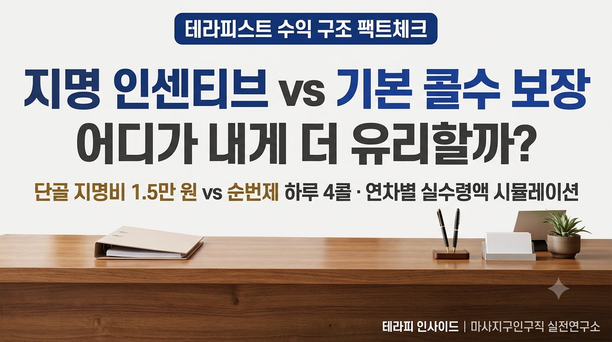

수익 분석 & 정산 가이드
지명 인센티브가 쏠쏠한 매장 vs 기본 보장 콜 수가 높은 매장, 어디가 유리할까?
작성일: 2026. 10. 22 · 연구분석: 테라피 인사이드

[핵심 요약]
스웨디시 및 에스테틱 구직 시 단골 고객 1인당 1~2만 원의 추가 수당이 붙는 ‘지명 특화 샵’은 숙련자의 시급 극대화에 유리하지만, 신규 진입 장벽과 텃세 리스크가 존재합니다. 반면 하루 4~5콜을 고르게 밀어주는 ‘순번제 기본 콜 보장 샵’은 초보자의 빠른 적응과 안정적인 기본 일당 형성에 강점이 있습니다. 연차별 실수령액 시뮬레이션과 면접 시 배차 공정성을 확인하는 3대 질문을 공개합니다.
1. 수당의 두 갈래 길: ‘단골의 힘’인가, ‘회전율의 힘’인가?
테라피스트 구인 공고를 살펴보면 보상 체계는 크게 두 가지 유형으로 뚜렷하게 나뉩니다.
첫째는 "지명 고객 유치 시 건당 10,000~20,000원 추가 인센티브 전액 지급", "단골 탄탄한 샵, 에이스 우대"를 내세우는 '지명 인센티브 특화형 샵'입니다.
둘째는 "하루 평균 4~5콜 무조건 보장", "순번제 공평 배차, 초보도 첫 달부터 월 400만 원 이상 가능"을 약속하는 '기본 콜수 보장형 샵'입니다.
두 조건 모두 매력적으로 보이지만, 관리사의 경력, 기술 숙련도, 접객 스타일, 그리고 체력 조건에 따라 실제 손에 쥐는 월 실수령액은 완전히 다른 양상을 띱니다. 내 현재 위치와 목표에 맞지 않는 시스템에 들어갈 경우, 지명 손님을 받지 못해 대기실에서 하루를 낭비하거나 무리한 연속 배차로 인해 관절과 체력이 먼저 망가지는 부작용을 겪게 됩니다.
2. 지명 인센티브 샵의 장단점
① 장점: 노동 시간 대비 극대화되는 시급과 편안한 응대
- 높은 시간당 수익: 일반 코스 수당이 55,000원일 때 지명비 15,000원이 붙으면 60분 1콜에 70,000원의 수익이 발생합니다. 하루 단 3명의 지명 손님만 받아도 21만 원의 일당을 챙길 수 있어 체력 소모 대비 소득이 큽니다.
- 검증된 매너 고객과의 케어: 이미 유대감이 형성된 단골 고객 위주로 예약이 잡히므로, 첫 방문 고객 응대에서 오는 낯가림이나 진상 고객 스트레스가 극적으로 줄어듭니다.
② 주의할 점: 신규 테라피스트의 긴 대기 시간과 텃세
- 신규 진입의 한계: 지명 중심 샵은 기존 선배 관리사들이 이미 요일별 단골을 꽉 쥐고 있습니다. 신규 입사자에게는 기존 관리사가 오프(휴무)인 날의 '땜빵 콜' 위주로 배정될 위험이 큽니다.
- 기복 심한 일당: 단골이 구축되기 전인 초기 1~3개월 동안은 하루 1~2콜에 그쳐, 약속된 고소득을 만져보지도 못하고 중도 퇴사하는 경우가 많습니다.
3. 기본 콜수 보장 샵의 장단점
① 장점: 초보자도 첫날부터 누리는 안정적인 일당
- 공평한 순번제 배차: 특정 관리사를 편애하지 않고 철저히 순번제(1번 방 ➡️ 2번 방)로 손님을 넣어줍니다. 신규 관리사라도 출근하자마자 하루 4~5콜을 안정적으로 소화하며 일당 20만~25만 원 선을 규칙적으로 벌어갈 수 있습니다.
- 빠른 실전 기술 연마: 다양한 체형과 성향의 워크인 고객을 집중적으로 접하면서 압 조절, 체중 이동, 고객 대화 매뉴얼 등 현장 테크닉이 비약적으로 성장합니다.
② 주의할 점: 높은 체력 소모와 '천장'이 있는 소득
- 관절과 손목의 과부하: 하루 4~5콜을 매일 규칙적으로 소화해야 하므로 손목, 허리, 무릎 등 관절 피로도가 큽니다. 올바른 체중 이동 자세가 잡히지 않은 초보자는 무리할 경우 부상 위험이 높습니다.
- 수익의 한계선: 지명 인센티브가 없거나 매우 낮아, 기술이 아무리 뛰어나도 하루에 소화할 수 있는 물리적 체력(최대 4~5건) 이상으로 수입을 끌어올리기 어렵습니다.
4. 수익 시뮬레이션: 월 22일 근무 시 실수령액 비교
[A 매장: 지명 특화 샵 (지명비 건당 15,000원 가정)]
- 숙련 관리사 (지명률 70% / 하루 4콜):
일당: (55,000원 × 4) + (15,000원 × 3) = 265,000원
월 22일 누적액: 약 583만 원
- 신규 관리사 (지명 0% / 하루 2콜 대기):
일당: 55,000원 × 2 = 110,000원
월 22일 누적액: 약 242만 원 (기본 소득 불안정)
--------------------------------------------------
[B 매장: 순번제 기본 보장 샵 (지명비 없음 / 순번제 4콜 보장)]
- 모든 관리사 공통 (신규·경력 무관 하루 4콜 배차):
일당: 55,000원 × 4 = 220,000원
월 22일 누적액: 약 484만 원 (기복 없는 균등 수익)
5. 면접 시 배차 공정성을 판별하는 3대 질문
공고 속 문구만 믿고 덜컥 출근했다가 대기실에 방치되지 않으려면, 면접 자리에서 카운터 실장에게 배차 시스템을 구체적으로 확인해야 합니다.
Q1. "원장님, 매장의 하루 전체 유입 콜 중에서 일반 순번 콜과 지명 예약 콜의 비율이 대략 몇 대 몇인가요?"
Q2. "신규 관리사가 입사했을 때 초기 몇 주간 기본 순번을 우선 배정해 주는 초보 안착 지원 제도가 마련되어 있나요?"
Q3. "카운터 배차 순번판이 관리사 대기실이나 모니터에 투명하게 공개되어 누구나 자기 순서를 확인할 수 있나요?"
6. 마치며: '성장 단계'에 맞춘 전략적 선택이 핵심
지명 샵과 기본 콜 보장 샵 중 어느 한쪽이 절대적으로 우월한 것은 아닙니다. 가장 중요한 것은 '나의 현재 숙련도와 체력'에 맞는 일터를 선택하는 것입니다.
• 입문 1~6개월 차 초보 관리사: 지명에 대한 압박 없이 안정적인 기본 일당을 받으며 기술을 다질 수 있는 순번제 기본 콜수 보장 샵에서 시작하는 것이 안전합니다.
• 단골 관리와 소통에 자신 있는 경력자: 적은 노동 시간으로도 높은 시급을 만들어 체력을 아끼고 롱런할 수 있는 지명 인센티브 우대 샵으로 이직하여 몸값을 극대화하는 것이 정답입니다.
테라피 인사이드 공식 구인구직 네트워크
마사지인포 · 마사지존 · 마사지매니저와 함께 투명하고 안전한 일자리를 검증합니다.
실시간 안심 일자리 확인하기 ↗